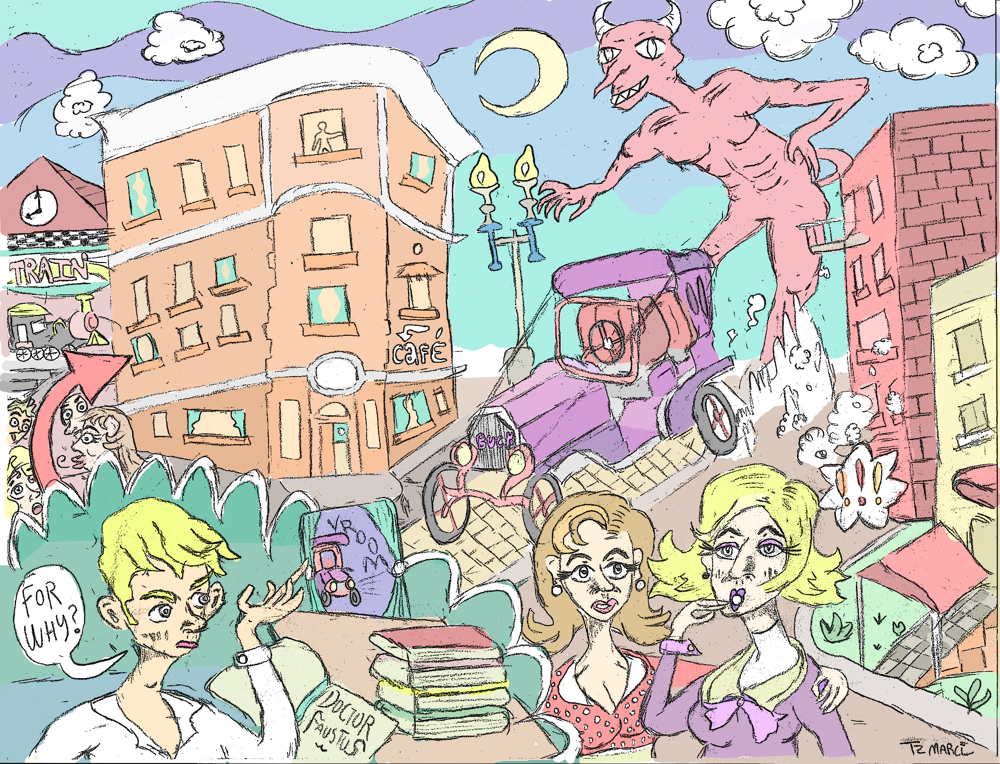
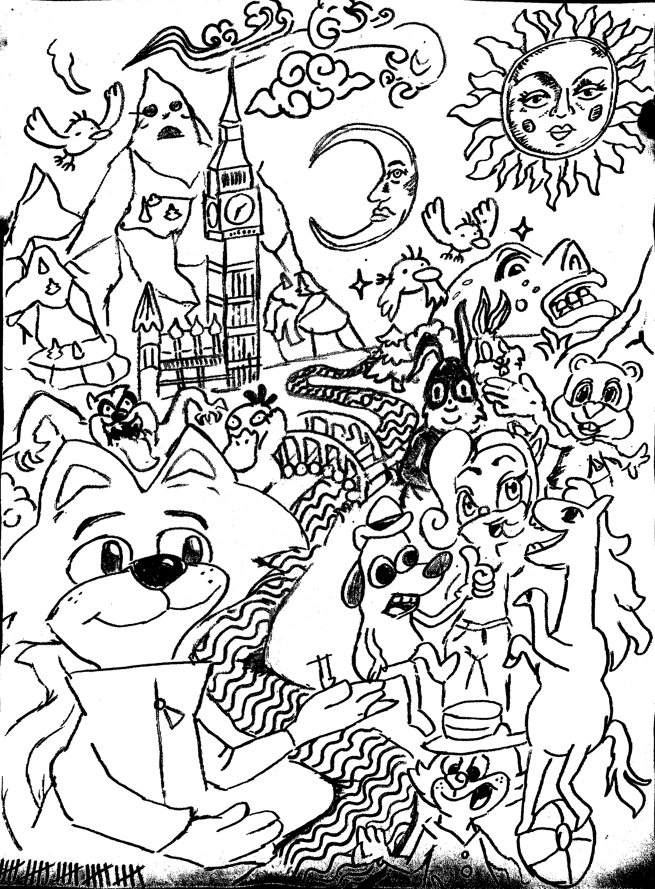

ABOUT
Over the past three years, I've attended University of Washington, where I studied web & interaction design. I pride myself on emphasizing visual charm without need for sacrificing the qualities of inclusive design.
PROJECTS

Description:
Description 1
Description 2
Skills Showcased:
HTML, JavaScript, PHP, CSS, Illustration
ARTWORK
In addition to web design, I am highly passionate about creating art. Most of my works are pencil drawings, which I then scan and color digitally. Here's a sample of what I do:

"After Hours"

"Every 5 Minutes"